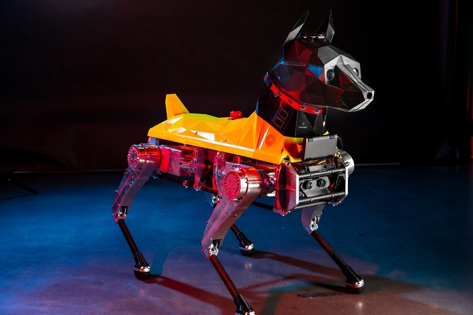
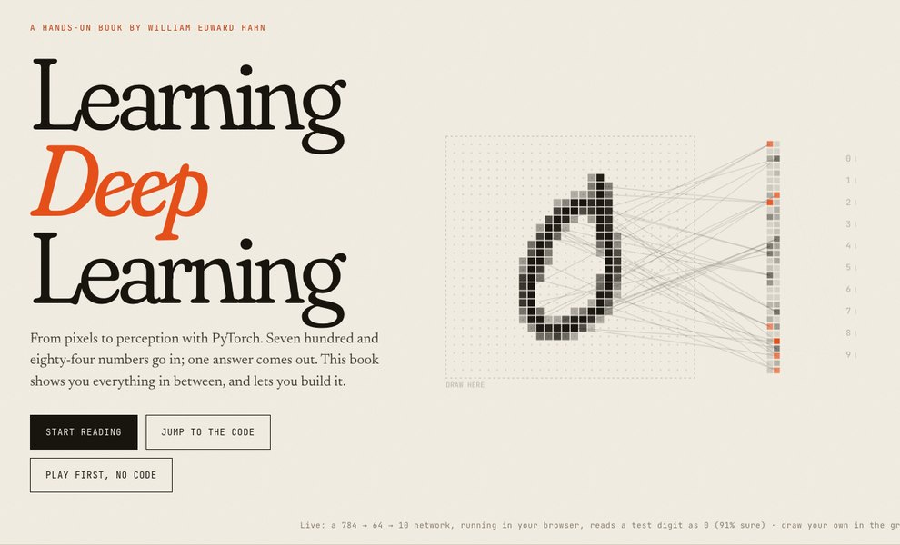

William Edward Hahn
Associate Professor of Mathematical Sciences, Florida Atlantic University
I study how natural and artificial systems compute, from sparse codes in the visual cortex to agents that learn inside synthetic worlds.
Heard me on Theories of Everything? Start with those conversations.
About
I’m an Associate Professor of Mathematical Sciences and Associate Director of the Center for Complex Systems at Florida Atlantic University, and Director of Research Initiatives and AGI at FAU’s Center for the Future Mind. I’m also a visiting lecturer at the Max Planck Florida Institute for Neuroscience. I studied mathematics and physics at Guilford College and earned my Ph.D. in Complex Systems and Brain Sciences at FAU in 2016, with a thesis on sparse coding and compressed sensing.
My work comes at one question from several directions: what does it take for a physical system to perceive, learn and compute? It has taken me from models of visual cortex to self-driving cars, quadruped robots and drug-discovery networks, and now to vision-language-action models and the foundations of computation. I’m writing a book on the last of these, Memory and Words: Foundations of Computation.
In 2014 Elan Barenholtz and I co-founded the MPCR Lab. In 2019 I was lead PI on the $1 million gift from Rubin and Cindy Gruber that built the Gruber AI Sandbox. I’m principal investigator on a $1.25 million U.S. Air Force SBIR Phase II award for quantum-resistant secure communication for drones.
- More than $2.8 million as PI since 2017, from the U.S. Air Force, the Gruber Foundation, Ghost Robotics and Nvidia
- College of Science Teacher of the Year, 2023
- Lab alumni at MIT, Stanford, Yale, Caltech, Harvard Law and Los Alamos National Laboratory
- Research featured in Science (“Could robots be psychology’s new lab rats?”, 2019); lab members interviewed by the BBC, Reuters, Scientific American and Wired
- Papers in Nature’s Scientific Reports, Robotics and Autonomous Systems and the Journal of Chemical Information and Modeling

Book
Learning Deep Learning: From Pixels to Perception with PyTorch
A hands-on book that builds the machinery of modern AI from scratch. You turn photographs into arrays and handwritten digits into lists of 784 numbers, build a machine that learns by guessing, then one that follows the slope downhill, then networks that see, take apart a famous one, and finish with machines that imagine images of their own. Every listing runs, and the online edition has live demos you can draw on.
- Why Deep Learning
- Images Are Numbers
- Learning from Data
- Seeing with Convolutions
- Machines That Imagine
Read it onlineDownload the PDF (301 pages)Get the code (MIT License)

Research
Sparse coding and compressed sensing run through everything I do. The lab’s work follows three threads.
Language and action in embodied AI
How large language models can ground what they see and turn it into physical action, on embedded hardware.
Foundations of computation
Hyperdimensional computing, stochastic computing and one-instruction architectures: rebuilding the computing stack from the metal up.
Languages and minds
How the design of a language, for people or machines, shapes the intelligence that grows inside it.
Selected papers
- Jerez, Stuart, Schmitt, Guerrero-Given, Christie, Hahn, Kamasawa and Smirnov (2021). A deep learning approach to identifying immunogold particles in electron microscopy images. Scientific Reports 11 (Nature Portfolio).
- Teti, Hahn, Martin, Teti and Barenholtz (2021). A controlled investigation of behaviorally-cloned deep neural network behaviors in an autonomous steering task. Robotics and Autonomous Systems 142.
- Morris, St. Clair, Barenholtz and Hahn (2020). Predicting binding from screening assays with transformer network embeddings. Journal of Chemical Information and Modeling 60(9).
- Hahn, Lewkowitz and Barenholtz (2015). Deep learning human actions from video via sparse filtering and locally competitive algorithms. Multimedia Tools and Applications 74.
Talks
Long conversations where I lay out the ideas I keep coming back to.
- From Turing to Hyperorganisms: Rethinking Intelligence and Mind in the Age of LLMsFrontier Tower, San Francisco
- Unconventional Computing and CognitionKeynote, Florida Atlantic University
- 2D Cellular Automata and Image ConvolutionsWolfram Institute. The idea behind the grid at the top of this page.
- The Theory That Your Thoughts Were Never Your OwnTheories of Everything, with Elan Barenholtz
- Extraordinary Advances in Artificial Intelligence MedicineTheories of Everything, recorded at FAU
- Wolfram, Leibniz and ConsciousnessTheories of Everything. Also on Spotify
- Our Minds Could Be Running on Virtual MachinesTheories of Everything (on YouTube as “These Thoughts Will Literally Destroy You”). Also on Spotify
- Artificial Immune Systems and AI SafetyNIU AI Safety Conference, Washington, DC
More talks and conversations
- Biological Information HazardsEkkolápto
- Interdisciplinary Biology, Cybernetics and Complex Systems HackathonMIT Media Lab
- AI Innovation Center ConferenceBeth Israel Lahey Health
- Digital Psychedelics, Infohazards, SynesthesiaEkkolápto Polymath Salon, with Elan Barenholtz
- Polymath MedicalGruber AI Sandbox, with Michael Levin, Dan Elton and Gil Blander
- Are Languages Alive?Ekkolápto at FAU, with Subhosit Ray and Misha Klopukh
- Abstract Biology and Unconventional ComputersEkkolápto at FAU
- Unconventional ComputingLecture at the Gruber AI Sandbox
- AI and the Second RenaissanceGuilford College
- Neurons in Silico: Foundations of Data ScienceMax Planck Florida Institute for Neuroscience
Teaching
I’ve taught more than 25 courses at FAU, from Matrix Theory and Biostatistics to Deep Reinforcement Learning and Minds as Machines, and I was the College of Science Teacher of the Year in 2023. My courses run in the browser with nothing to install, and more than a hundred of my GitHub repositories are open teaching material. I also built zero-install AI modules that faculty now teach in biology, geoscience and chemistry.
Students I’ve supervised have taken first place twice at the FAU Undergraduate Research Symposium, and at FAU Wave and GPSA Research Day. A Broward County Regional Science Fair project earned first place and a NASA Special Recognition Award.
MPCR Lab alumni have gone on to MIT, Stanford, Yale, Caltech, Harvard Law School, Brown Medical School, Northwestern, Georgia Tech, Notre Dame and the University of Florida; to research posts at Los Alamos National Laboratory, the Naval Postgraduate School and the Department of Homeland Security; to tenure-track faculty jobs; and to founding their own AI startups.
If you want to join, email me with a short note on what you want to build.